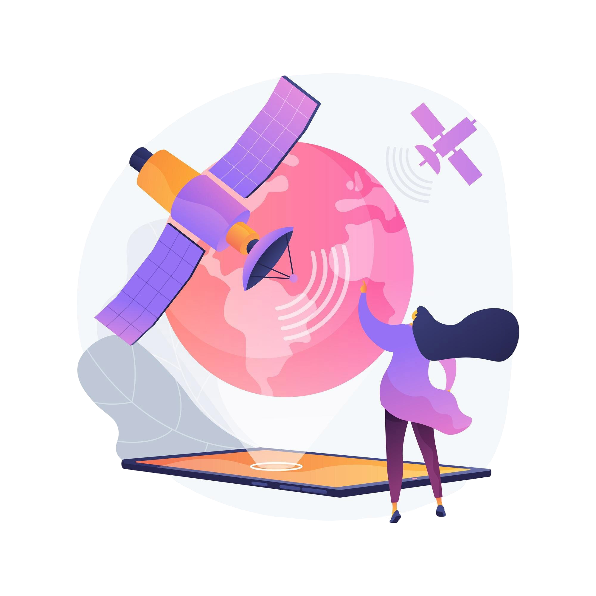
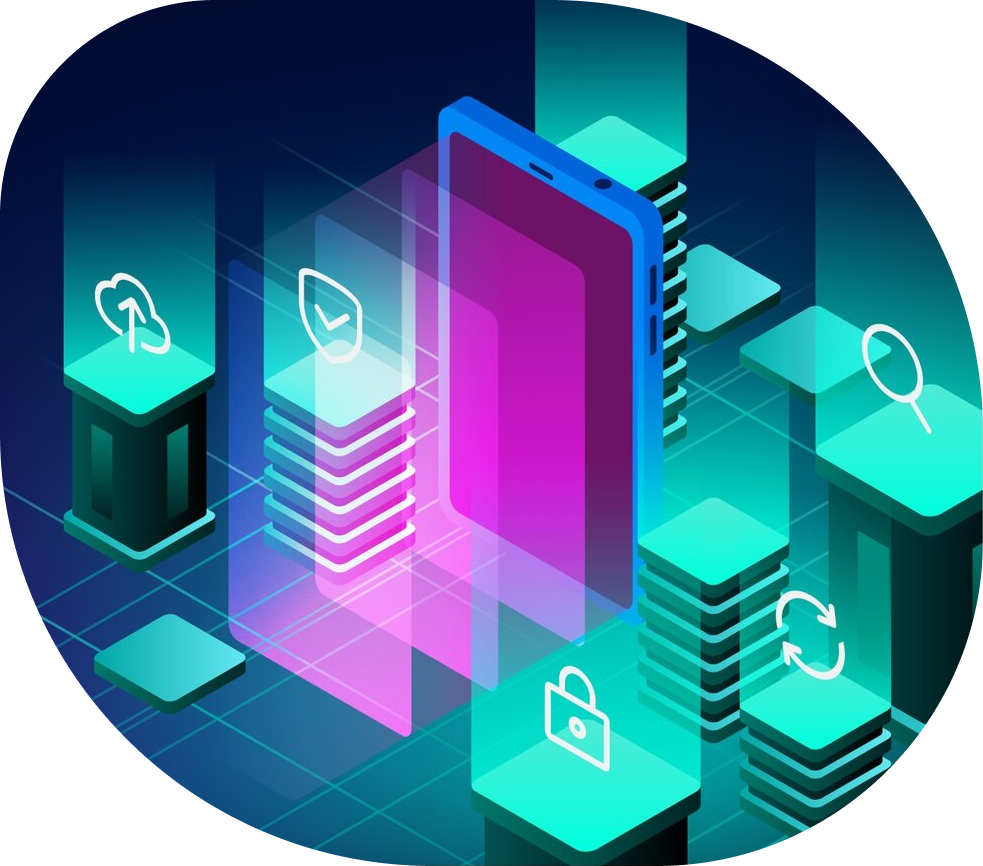

Терагерцовый (ТГц) спектр
Частоты от 100 ГГц до 3 ТГц идеально подходят для 6G, поскольку затрагивают широкую полосу пропускания и высокое пространственное разрешение. Однако есть и недостатки: высокие потери при распространении радиоволн, молекулярное поглощение и сложность аппаратуры.
Оптическая беспроводная связь (OWC)
Эта технология использует световые волны для беспроводной передачи информации. Она обеспечивает высокую скорость передачи данных, низкую задержку, низкий уровень помех и высокий уровень безопасности. Однако также можно столкнуться с такими проблемами, как атмосферное ослабление, выравнивание и мобильность.
Технологии неназемной связи (NTN – Non-Terrestrial Networks)
Они подразумевают использование таких средств, как спутники, БПЛА, воздушные шары или дирижабли, которые бы обеспечивали беспроводное покрытие сверху. Всё это может дополнять наземные сети и обеспечивать подключение к удаленным районам. Однако они также требуют координации, интеграции и регулирования.

Реконфигурируемые интеллектуальные поверхности (RIS – Reconfigurable Intelligent Surface)
RIS – это пассивные или активные устройства, которые могут манипулировать электромагнитными волнами, изменяя их свойства отражения или преломления. Это может повысить качество сигнала, охват и эффективность. Однако они также нуждаются в точной оценке канала, синхронизации и управлении.
Бессотовая технология Massive MIMO (Multiple Input Multiple Output)
Это сетевая архитектура, которая распределяет большое количество антенн по широкой территории без определения границ сот. Благодаря этому повышается спектральная эффективность, надежность и масштабируемость. Однако это требует высокой вычислительной мощности, пропускной способности обратной связи и координации.

Блокчейн
Знаменитая технология децентрализации обеспечивает безопасные и прозрачные транзакции между несколькими сторонами. Она может повысить надежность, конфиденциальность и безопасность беспроводной связи. Но при этом потребляет много энергии, большую пропускную способность и хранилище.